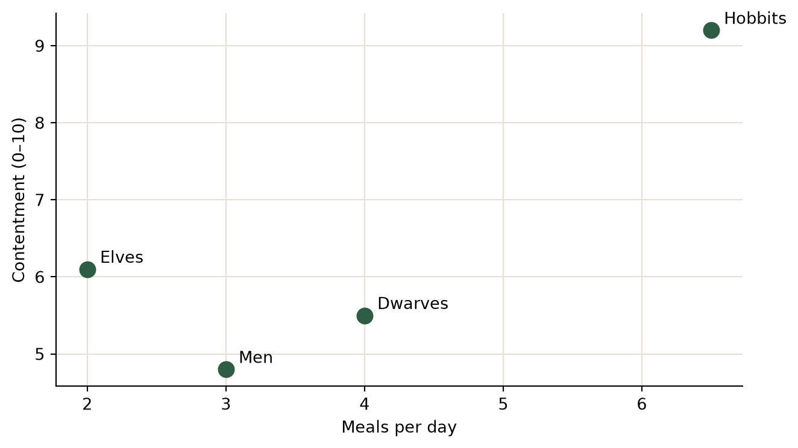

The Auditor’s Workbook: Executable Numbers at The Leap Journal
data
economics
methods
Every figure in this journal can carry its own code. A tour of executable blocks: computations, tables, interactive charts, static plots, and a reader-adjustable model.
A respectable journal shows its working. On this site, an article’s numbers need not arrive as assertions: the code that produced them can sit in the article, run at publication, and leave its output on the page for any reader — or referee — to inspect. This annex demonstrates the machinery. Everything below is computed when the site builds; nothing is pasted in.
1 A plain computation
The simplest block: Python in, numbers out. Suppose the Erebor hoard stood at 618 million gold pieces and dragon custody yields nothing, while the pre-dragon economy grew at a modest 2 percent. The cost of 171 years of zero-velocity custody:
Nearly nineteen billion in forgone output. The dragon, it must be said, slept well.
2 A computed table
Data frames render as tables automatically. The regional ledger of the reflation, by recipient:
import pandas as pdledger = pd.DataFrame({"Recipient": ["Kingdom under the Mountain", "Dale reconstruction","Lake-town relief", "Fourteenth share (audited)","Eagles' consideration"],"Share (%)": [52.0, 22.0, 14.5, 7.1, 4.4],"Disbursed by": ["Dáin II", "Bard", "Master's office", "This author", "In kind"],})ledger["Gold (millions)"] = (ledger["Share (%)"] /100*618).round(1)ledger
Recipient
Share (%)
Disbursed by
Gold (millions)
0
Kingdom under the Mountain
52.0
Dáin II
321.4
1
Dale reconstruction
22.0
Bard
136.0
2
Lake-town relief
14.5
Master's office
89.6
3
Fourteenth share (audited)
7.1
This author
43.9
4
Eagles' consideration
4.4
In kind
27.2
3 An interactive chart, in house style
The standard journal theme applies itself: jagged lines, dots at every data point, hover crosshairs, the wordmark, and a download button that exports the graph complete with title, legend, axes and citation.
Figure 1: Monetary velocity around the reflation of 2941. Fictional data, as is traditional in this journal.
4 A static plot
Not every figure needs interactivity. Matplotlib output lands as a plain image — which also travels into the article’s PDF:
import matplotlib.pyplot as pltpops = ["Elves", "Men", "Dwarves", "Hobbits"]meals = [2, 3, 4, 6.5]contentment = [6.1, 4.8, 5.5, 9.2]fig_m, ax = plt.subplots(figsize=(7, 4))ax.scatter(meals, contentment, s=90, color="#2e5d43", zorder=3)for p, x, y inzip(pops, meals, contentment): ax.annotate(p, (x, y), textcoords="offset points", xytext=(8, 4))ax.set_xlabel("Meals per day")ax.set_ylabel("Contentment (0–10)")ax.grid(color="#e4e0d5", zorder=0)for side in ("top", "right"): ax.spines[side].set_visible(False)plt.tight_layout()plt.show()

Figure 2: Meals per day and observed contentment across selected populations. Method: asking.
5 A model the reader can adjust
Observable JS blocks run in the reader’s browser, so the reader can hold the slider. Set the dragon’s counterfactual growth rate yourself and watch the forgone-output estimate move:
viewof g = Inputs.range([0.0,0.05], {value:0.02,step:0.005,label:"Counterfactual growth rate"})
{const hoard =618e6, years =171;const data =Array.from({length: years +1}, (_, t) => ({year:2770+ t,value: hoard *Math.pow(1+ g, t) /1e9, }));return Plot.plot({style: {fontFamily:"IBM Plex Mono, monospace",background:"transparent"},y: {label:"Hoard value (billions, counterfactual)"},x: {label:"Third Age year",tickFormat:""},marks: [ Plot.lineY(data, {x:"year",y:"value",stroke:"#2e5d43",strokeWidth:2}), Plot.dot(data.filter(d => d.year%20===10), {x:"year",y:"value",fill:"#a63d40"}), ], });}
6 The point
None of this required special tooling from the author beyond writing the code in the article file. When the numbers are wrong, the code is wrong, visibly — and a correction is a one-line edit that republishes the article, its charts, its tables, and its PDF together. Auditing, at last, made pleasant.
Citation
BibTeX citation:
@online{baggins2026,
author = {Baggins, Bilbo},
title = {The {Auditor’s} {Workbook:} {Executable} {Numbers} at {The}
{Leap} {Journal}},
date = {2026-08-28},
url = {https://cynicalcyanide.github.io/leapblog-mock/posts/auditors-workbook/},
langid = {en}
}